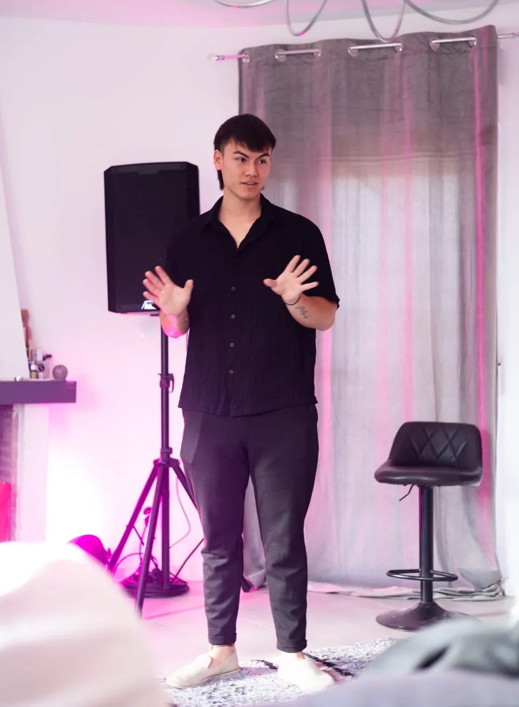
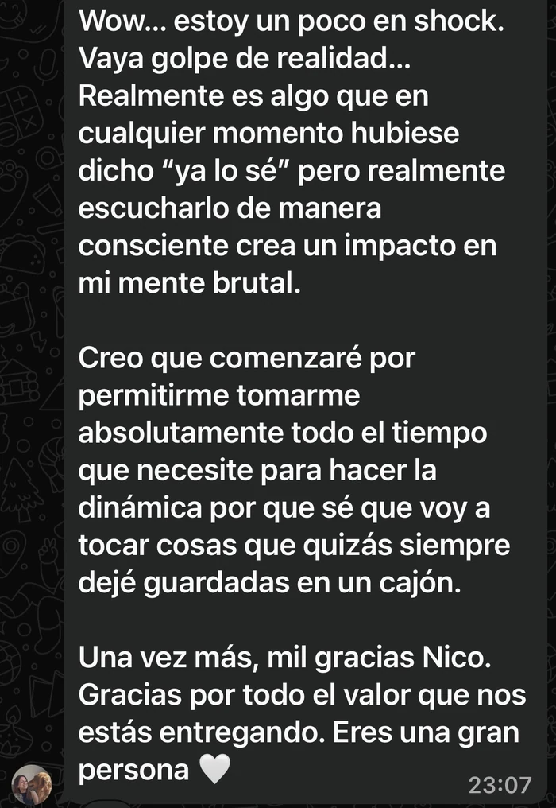
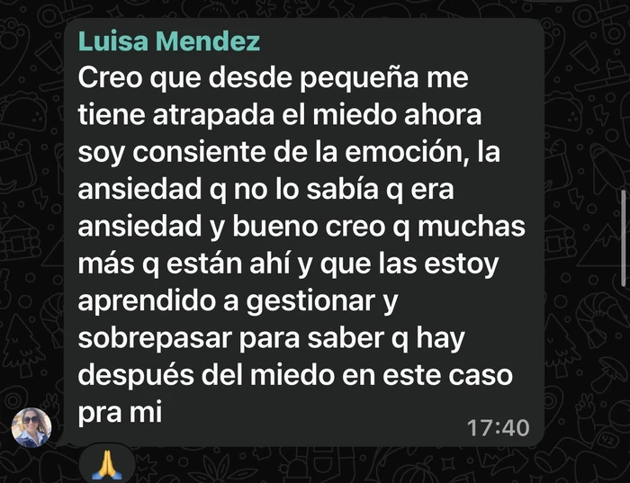
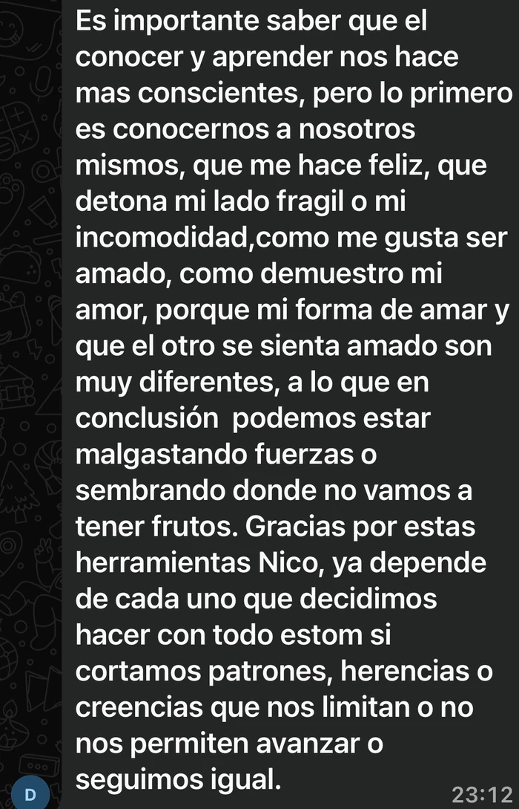

Reconocer
Identificar patrones desde los que puedes estar tomando determinadas decisiones actualmente.
Masterclass gratuita · En vivo · 25 de agosto
Descubre por qué puedes llevar años trabajando en ti y aun así repetir los mismos patrones, y aprende un marco práctico para empezar a elegir desde una identidad más consciente.
Quiero entrar gratis25 de agosto · En vivo · Acceso desde el grupo privado de WhatsApp

Puede que ya hayas leído libros, visto cientos de vídeos, meditado, hecho terapia, trabajado tus hábitos o comprendido muchos de tus patrones. Y aun así...
El problema puede no estar en cuánto sabes.
Puede estar en desde qué identidad sigues tomando tus decisiones.
La mayoría intenta cambiar directamente la acción. Más disciplina. Más motivación. Más información.
Pero si tus nuevas acciones siguen naciendo de los mismos patrones, es fácil terminar regresando a lo conocido.
En esta Masterclass aprenderás a reconocer ese circuito y un marco para empezar a interrumpirlo conscientemente.
Identificar patrones desde los que puedes estar tomando determinadas decisiones actualmente.
Entender por qué saber lo que quieres hacer no significa necesariamente conseguir sostenerlo.
Conocer un marco sencillo para empezar a responder conscientemente en lugar de limitarte a reaccionar automáticamente.
No saldrás con 30 páginas de teoría.
Saldrás con un mapa que podrás empezar a observar y aplicar ese mismo día.



Quién te guía
Durante años también intenté cambiar mi realidad trabajando principalmente sobre lo que hacía. Más disciplina. Más información. Más esfuerzo.
Hasta que empecé a observar algo más profundo: muchas de mis decisiones seguían intentando reafirmar patrones e identidades que ya conocía.
Hoy gran parte de mi trabajo gira alrededor de una pregunta:
¿Desde quién estás tomando las decisiones que están creando tu vida?
En De Sobrevivir a Elegir compartiré contigo un marco práctico para empezar a observar este proceso con mayor claridad.
Masterclass gratuita · En vivo
25 de agosto
Descubre qué está dirigiendo algunas de tus decisiones y aprende un marco para empezar a elegir con mayor consciencia.
Entrar gratis a la MasterclassAl entrar accederás al grupo privado de WhatsApp donde recibirás la información, recordatorios y acceso a la Masterclass.